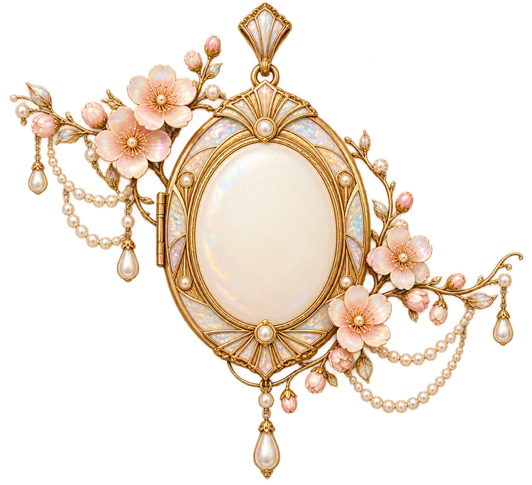

物語の根っこ
山の見える町から
物語の根っこは、山の見える町。季節を感じて育ったことが、今日の私へとつながっています。
この案はキャラクターを使いません。
人物・経歴はすべて架空です。装飾は生成イラスト、ご本人の写真は未提供の枠で示しています。
B10 記念の一冊
人生の履歴書
MY LIFE & THANKS / 出会いに感謝を

たちばな はな
〜 私が歩んだ約80年の物語 〜
一人の人生には、一冊の本になるほどの物語がある。
出会いを重ねて、今日の私。
現在の暮らしなどの写真
ご提供後に差し込みます
出会いの数だけ、私の物語がある。
ご本人・ふるさとなどの写真
ご提供後に差し込みます
物語の根っこ
物語の根っこは、山の見える町。季節を感じて育ったことが、今日の私へとつながっています。
庭の花を瓶に飾った小さな楽しみ。美しいものに気づく心を、幼い頃の暮らしが育ててくれました。
図書室の本、友人と交換した手紙。言葉を通じてつながる喜びに、学生時代に出会いました。
お店では、品物を包み、相手の話に耳を傾けました。仕事もまた、人と心をつなぐ時間でした。
同じ場所で、時を重ねられたこと。
家族という、大切なつながり
家族と囲んだ食卓は、人生の大切なつながり。同じ場所でいろいろな話を聞き、ともに時を重ねました。
暮らしの区切りの先にも、楽しみは続きます。新しい日々を大切にしながら、ここまで歩んできました。
身近な風景に囲まれて育つ。
人との出会いから、少しずつ世界が広がる。
その年の世の中：東京オリンピック開催 日本オリンピック委員会
目の前のことに向き合いながら歩む。
その年の世の中：大阪で日本万国博覧会開催 外務省
暮らしの中に、新しい楽しみを見つける。
その年の世の中：元号が平成から令和へ 内閣府
感謝と小さな希望を胸に、時を重ねる。
時を重ねて、残ったもの
一緒に笑った日も、支えられた日も。
思い出すと、笑顔になる。
手作りの袋を贈り、喜んでもらいました。ものを通して気持ちが届く、心に残る嬉しい出来事です。
現在の暮らしなどの写真
ご提供後に差し込みます
針を進め、花を飾り、歌を口ずさむ。何気ない楽しみが、長い日々を彩ってくれました。
友人と温泉の町へ出かけた思い出。迷った道も、窓辺のお茶も、一緒に笑った人と結びついています。
頼るのが苦手だった時、話を聞いてくれる人がいました。その優しさに、何度も支えてもらいました。
ありがとうが、次の日々をつないでゆく。
声をかけ、笑い合い、見守ってくれた一人ひとりへ。たくさんのつながりが、今日の私を支えています。
今日の私
今日も、散歩の花、本、手帳、人との時間を大切に。無理をせず、小さな楽しみを見つけています。
次の世代へ
美しいものを味わい、嬉しさを分け合ってほしいと思います。困った時も、誰かとつながることを忘れずに。
この先の楽しみ
季節の庭を訪ね、手紙を書き、新しいご縁に出会う。ありがとうの続きを、これからの日々にも重ねていきます。